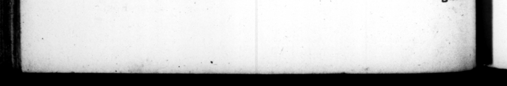

96 Rome modo, ſed provincias peragranti quotidiana ofſicia rogari, ac fine regio inſigni, more clientium præſt ĩterunt. when he was at Rome, but as he was travelling through the provinces. 61. Quoniam qualis in imperfis ac magiſtratibus regen daque per terrarum orbem pace hellog; Rep. fuerit, expoſui: referam nunc interiorem ac fa miliarem ejus vitam: quibuſque moribus atque fortuna domi & inter ſuos egcrit, à juventa uſque ad ſupremum vite diem. Matrem amiſit in rimo conſulatu: ſororem aviam, quinquageſimum & quartum agens ætatis an-. num. Utrique cum præcipua officia vive præſtitiſſet, etiam defuntz honores maximos tribuit. 62, Sponſam habuerat adoleſcens P. Servilij Iſaurioi filiam : ſed reconciliatus polt — diſoordiam Antonio, poſtulantibus utriuſque miLicibus, ut & neceſlitudiue aliqua Jingereatur, pri vignam ejus Clandiam, Fulviæ ex P. Clodio filiam, duxit uxorem, vixdum nubilem. Ac ſimultate cum Fulvia ſocru exorta, dimiſit intactam adhuc, viigmem, Mox Scriboniam in matrimonium accepit, nuptam ante duobus conſulari bus, & ex altero et iam matrem. Cum hac etiam divortium fecit, pertæſus, ut ſeribit, morum perverſitatem ejus : 4c ſtatim Liviam Druſilam matrimonio Tiberij Neronis, & C. 8 UE T. TR AN Q. doms, and in a Roman dreſs, and 445. ing aſide the badges of their royal dig; nity, attend and complement him dai as clients do their patrons, not 61, Having thus given an account of his behaviour in hu offices both eiyil and military, and his management in the government of the empire, both in peace and war ; I ſhall in the next place preſent the reader with an account of his private and domeſtick life,” the manner of his behaviour at home, 4. mongſt his relations aud dependengs, and the fortune attending him in, that way of life, from his youth, to the 49 of hu 25 * off 2 2 ab i firſt conſulſhip, and his ſiſter Ota url was Coing upon the fifty founth ar of his age. He had carried with the ut moſt᷑ kindneſs to them both HI living, and paid them the highe$F bnnours upon their deceaſe. 72. He was contratted very 9 to the daughter of Publius Servilius, Jau: ricus; — after his reconciliation with Anthony, the armies on both fedes ini: ing upon 4 further alliance by marr are betwix them, he married his ff. daughter Claudia, the daughter of Ful. via by Publius Claudius, tho ſhe was ſearce marriageable ; and upon a dif ference ariſing with his mother in law Ful via, divorced her untouched, and 4 pure virgin. Soon after he took to wife Scribonia, who bad before been married to two conſular gentlemen, and was 4 mot her by one of them. But parted with her tco, being quite tired out +6 he writes himſelf, with the 2 of her humour; and immediate 7 took Livia Druſilla, tho) big with child from her Ineshand Tiberius Nero, whom he caw tinued. extreamly fond of ever after. qu idem przgnantem, abduxir, dilexitque & probavit unice ac Veranter. 63. Ex Scribmia ſuliam, ef Livia nihil liberoram tulit, cum maxime cuperet. Infans, qui Conceptus erat, immaturus eſt editus. juliam primum Marcello Octavia ſoroꝛis ſuæ filio, tantum quod pueritiam egreſſo: deinde ut is oviir, M. Agripræ nuptum dedit : exorata forure ut fibi 63. He had his daughter Julia h Scribonia, but no children Lia, tho he very much diſtred it. She did indeed once conceive, but mi ſcarried Won it. He diſvoſed of his daughter u. lia firſt to Marrellus his ſiſters ſon, bus Juſt at age, and after his death to Mark 'Trippa, having prevailed with bis Hf ter, to reſign up her Son in lam to him, for at that time Agrippa had one 4 gener
